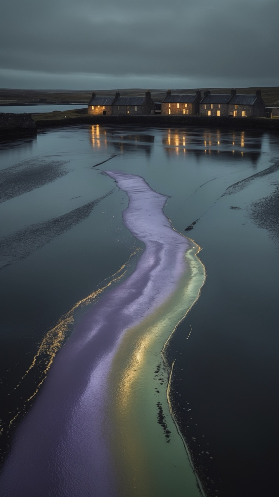
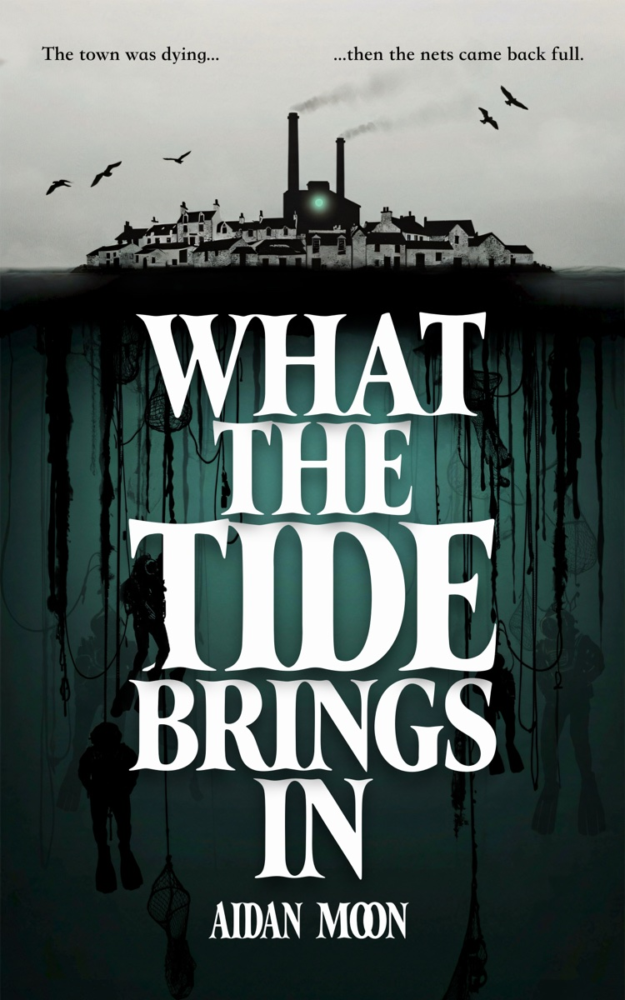
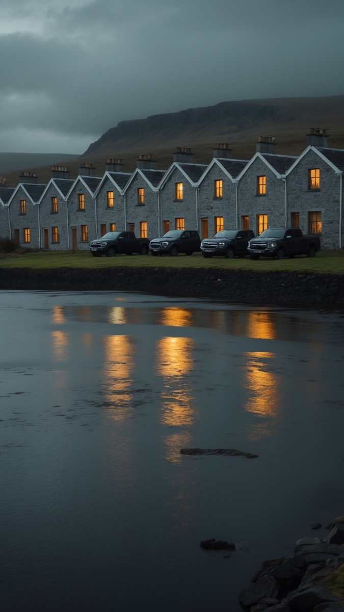
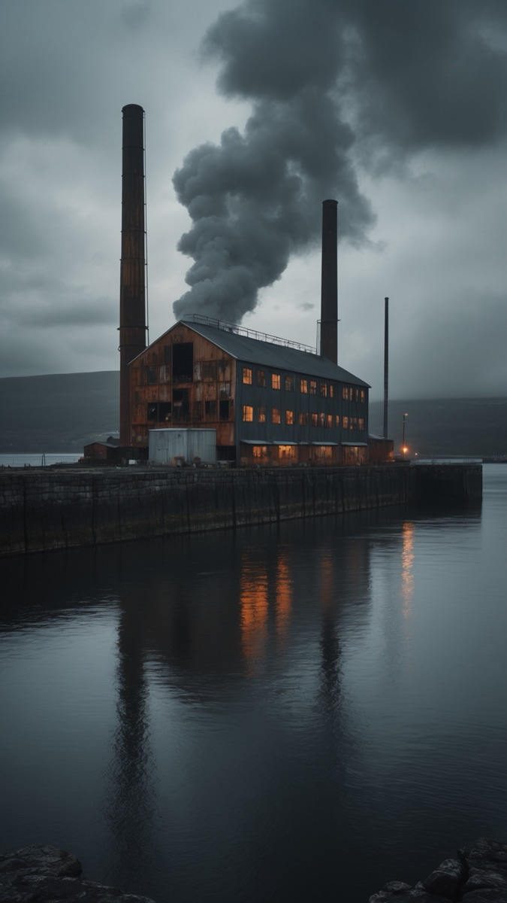
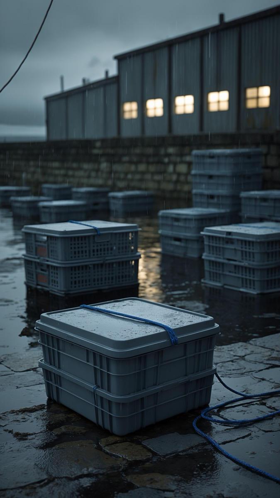
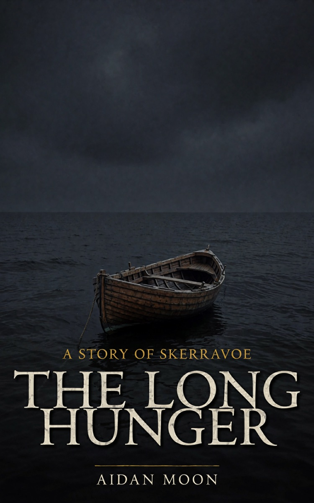
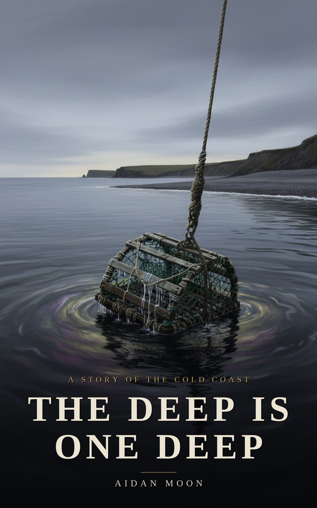

The harbour
The sheen on the water moves against the waves. Everyone in town has decided not to notice.
A novel · Folk horror · Being written now
The town was dying. Then the nets came back full.
By Aidan Moon

The Story
One island. One iron in the deep ground. One Leask left to answer for it.
Dan Leask comes home on the weekly ferry to bury his father from a closed casket, settle the debts, and be gone in two days. But the island that was bankrupt a year ago is freshly painted. The cannery runs a night shift. The harbour has gone a slick, iridescent black, and the nets come up full.
Dan spent eleven years on the floor of the North Sea. Now he can't stand on a pier and watch the tide come in, and he won't say why. Skerravoe doesn't care why. It needs him back in the water, because something is lying in the deep ground off the headland, and only one man alive has the training to reach it and the blood to lay a hand on it.
The Fisherman meets Starve Acre on a Scottish island — extraction horror where the monster keeps a ledger. For readers of John Langan, Andrew Michael Hurley and Julia Armfield's Our Wives Under the Sea.
The Island
A small, jagged island off the far north of Scotland. One settlement, also called Skerravoe: salt-bleached houses, a shop that is also the post office, a kirk nobody fills, a harbour, and the Brae cannery rusting on the north pier. The ferry comes once a week, weather permitting. Off the headland the seabed drops into the deep ground, and the water in the harbour has gone a colour it shouldn't be.

The sheen on the water moves against the waves. Everyone in town has decided not to notice.

The island was bankrupt a year ago. Now there's a light in every window. New paint. New trucks. Nobody asks what changed.

It runs a night shift now. Nobody in town will say what it cans. The smell off the stacks is sweet — sweet as a wound dressed too late. And from the breakwater to the kirk, the sky is silent. No gulls.

The boats are landing more than they ever have. Sandy Gunn has fished these waters sixty years. He eats tinned ham now.
The People
You'll know them by what they keep, what they owe, and what they will not say.
The narrator
Eleven years a saturation diver on the floor of the North Sea. Now he can't stand on a pier and watch the tide come in, and he won't say why.
He came home for his father's funeral. The town says the sea took Eilert Leask. The town says a lot of things.
The shop & the post
Runs the shop and the post office, which on an island this size means she runs the truth. Dan's oldest friend; her boy, Joss, learned his knots from Dan's father.
She knows what every house owes. She knows what every house paid with. She has stopped writing either down.
The old crew
Seventy-odd, and dying of something ordinary. On this island, that makes him the lucky one.
He crewed Eilert Leask's boat for forty years, and he is the only man on Skerravoe who still eats the mainland food. Ask him why. He'll tell you. That's the problem.
The father
Buried without a minister, in a casket the joiner asked his son not to open. The island says he drowned. The island hasn't said much else.
He kept a logbook for forty years. His son is about to read it.
Free Stories
Both stand entirely alone. Both open a door onto the world of the novel. Yours in exchange for an email address — and first word when the book is ready.

The prequel
The island was starving. Then a deal was made.
Skerravoe, 1831. The herring are gone, the rent is still due, and one man rows out over the deep ground to strike a bargain with what lives there. Tormod Leask's own account, set down late in his life for the one person he knows will need it: whoever of his blood comes last.
A complete short story · about 8,000 words

The companion
The sea gave the boat back. It kept the man.
Mae lives alone at Sterrin, four houses and a dead lighthouse on a bay at the top of Scotland. When her husband drowns off a flat calm, she can't bring herself to cut his creels loose. Four months later she rows out to do it at last — and every pot is packed full.
A complete short story · about 6,000 words
No spam. One unsubscribe link in every email. Your address is never shared.
Being written now
When it is, the link will live here, and the people on the list will have it first. Until then the island is still being built, chapter by chapter, and the two free stories are the way in.
Be first to know